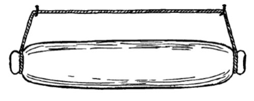
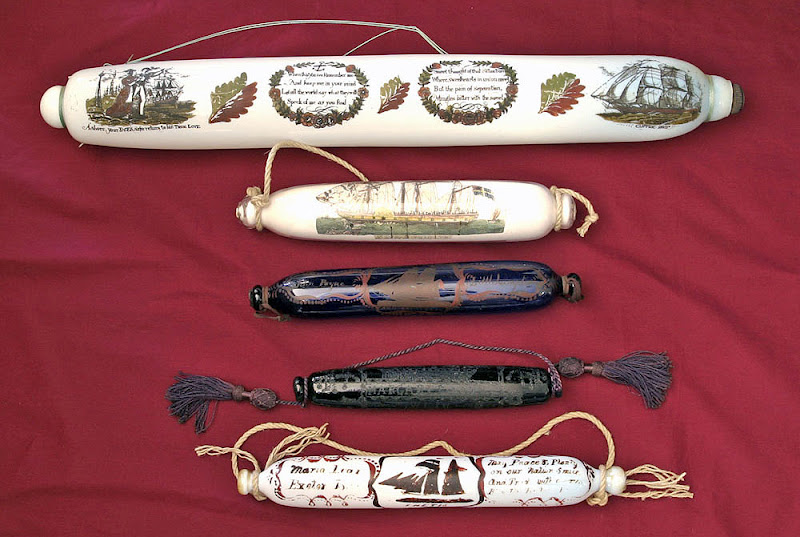

fvl1_01 !
fvl1_01 !Но правы и
vova_belkin , и sibir79 . В таких же сосудах на кораблях хранили и специи, и приправы.Постоянная влажность на корабле превращала все гидрофильные вещества в непригодную для использования по прямому назначению массу. Из материалов, которые могли противостоять всепроникающей влажности существовали тогда лишь стекло и керамика. Металлы не в счет – они разрушались под воздействием соли. Вот и доставляли «белую смерть» на борт в стеклянных контейнерах. А чтобы удобно был их хранить на камбузе во время качки, сосуды изготавливали такой формы, которая позволяла подвешивать их к подволоку.

Освободившиеся контейнеры творчески одаренные моряки расписывали сценами из окружающей их действительности и дарили своим близким и друзьям. Так постепенно родился обычай преподносить любимой женщине такого рода расписанный сосуд на память перед выходом в море. В дальнейшем изготовление таких сувениров уже не было связано с первоначальным функциональным назначением данного гаджета, а превратилось в самостоятельный промысел.

Постепенно все портовые сувенирные лавки и антикварные магазинчики заполнялись такими предметами, расписанными с различной степенью мастерства, и так же постепенно ушла и память о первоначальном назначении этих предметов. На ценниках появилось обозначение их как 'glass pin' - "стеклянная скалка", которое незаслуженно вытеснило правильное название предмета.